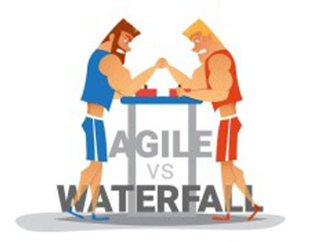

Disrupt Yourself… The Agile Way
Companies that do not Lead by Technology in the immediate future will cease to exist. Three years ago, I recollect a Woman Leader from UPS in a conference call her organisation a Technology company that also move boxes. As I glanced around the room I saw a range of expressions in the audience. I realized many companies at that time would not have said that but I’m sure all of them have realized now that she was right.
Our own journey to digital transformation was given a leg up as our new CEO for Maersk Global Services, Navneet Kapoor, joined us in mid-2017. Though the agenda for transformation was a must win battle for us, yet we needed to significantly up the speed to achieve it. In Navneet’s view, many digital non-native companies despite having the will and wherewithal to transform have a high failure rate. Yet success is possible if a virtuous cycle of doers & decision makers come together in a start-up ecosystem, with infusion of engineering talent that flourishes in an environment of intrapreneurship. This thought has been put in action with our set up Maersk Digital Centre in Bangalore where we are looking at onboarding many professionals in roles of Digital engineers, data engineers, data and solution architects, Engineering Managers etc
Ownership of large assets & a history of success often makes many large corporates blind. It is important for us to pro-actively understand our blind spots. Organizations need to be fully self-aware as its leaders to survive & grow in this changing era.
Every organisation today needs to assess if they are doing all they can to innovate and serve their customers. What is critical in these times is SPEED as ever before, much more than how we used to measure time to market. One needs to move quickly in to building agile way of working where self-managed & truly empowered teams are a reality.
When we study the principles of Agile, we can see, Agile is really just common sense with discipline. This, in my belief, is its core strength. It does away with the need for watertight, sequential, change averse, measured in speed, single project focussed style of delivery. Instead, it requires adaptive planning through a time based iterative approach and encourages rapid and flexible responses.
The barriers to Agile are many-holding on to legacy, bureaucracy, KPI based reviews, inadequate resources allocation, trying to scale without infusing digital capabilities, and lack of trust/transparency are some big-ticket ones. Organisations like Walmart, UPS, PayPal or Cisco that have undertaken this journey, have become great study on how to transform, i.e. how they remove barriers between Business teams, Development teams and Operations teams to make Agile a reality. While each is unique in its approach, what is common is the that they have also worked on bringing behavioural change.
A key challenge an organisation faces in embracing Agile is the mindset. For many on the senior Leadership team, Agile requires a significant change in mind-set as traditionally they have been focussed on requesting and approving big bang system changes. As a McKinsey report on digital transformation puts it, the C-suite leaders need to understand the benefits of the perpetual-evolution model, which emphasizes continual monitoring and continual renewal across all elements of technology stacks. If we simply try to adapt, we are still tied to milestone linked planning of project management or reviews the waterfall way. For perpetual evolution companies need to COMMIT to continually update their enterprise architectures and this requires both motivation & confidence in equal amounts.
Embracing Agile begins with a Change in the Operating Model – Organisations need to take a hard look at how they are organised and restack themselves around customers & business for future agility and innovation. This may sound daunting yet as it is Agile, the approach can fire in phases through iterative and incremental development. The new model/s need to dramatically remove any artificial fragmentation that is created for the sake of control or managing certain SLAs to improve efficiency.
This may call for an Organisation redesign where the structure is ‘Networked & not hierarchical’ implying a delayered organisation with larger spans of control, bringing leaders closer to the teams while breaking functional silos. As Spotify calls it, the organisation should be ‘loosely coupled and tightly aligned’. Setup of small cross disciplinary teams staffed with top most talent working on a brutal priority list, it is like an ‘Amoeba Organisation’ (concept developed by a Japanese organisation Kyocera). The organisation is divided into small neural network units (like amoebas) that are responsible for drafting their own milestones and succeed through collaboration of all its members (‘management by all’). You’d think such a loose way of management will not last and would erode accountability, yet this organisation has 50+ consecutive years of profitability. As the big daddy leading digital, Google calls it, it’s a flat organisation where ideas are generated by all employees and not through chain of commands. These teams deliver throughcontinuous integration, continuous delivery, test driven development, and learn on the go as they course correct (through daily stand up meetings & retrospectives). In this approach Products are not just commercial offerings but a combination of experiences and offerings.
No company can really know what customers need until it listens to the customer directly. An organisation shouldn’t wait for the customer to complain before they understand their experience. Organisations that embrace Agile’ s principles, have Outstanding Customer Obsession. They ruthlessly prioritize to make customers first remain relevant. Organisations need strive towards becoming a real partner in Customer’s growth, be it sensing their needs for future or addressing their pain. Customer driven innovation is delivered through Agile teams that are organised keeping the Customer at the core. And yet having all mechanism to innovate & react to disruption in place too, solutions still get steamrolled as layers of internal management can turn them unrecognizable.
Leaders driving transformations in organisations carry a special disruption DNA in themselves. While transcending functional boundaries and silos they can work through self-organising autonomous teams. Old school leaders even the ones coming from a technology background wouldn’t necessarily work in generating followership in Talent as they will not be able to engage unless they discard the typical control & command school of management. They need to lead the organisation to speak Agile and for that they themselves create Agile habits. As they build Agile-at-scale environment, they will need to redefine managerial roles and responsibilities with teams of Product Owners, Agile Leaders, Scrum Masters, Developers and as in case with us at Maersk, ‘Builders’ and ‘Customers’. Through Scrum approach of requirement assembly and goal keeping and Sprints, a time boxed (at one month) event in which a useable iteration is released, teams ensure continuous delivery and design. These teams work together on User Stories with no intermediate layers or hierarchy with E2E view, ownership, involvement(everybody giving their best), and they collaborate with internally available resources who can help on the problem. An early lesson in a large retailer’s Agile transformation was the inability for the development team to see E2E till commercialization (to quote the ex-Microsoft Leader Raj Biyani, Innovation is Invention with Commercialization), that impacted technical excellence and led to frustration in the teams and hampered their focus on essentials that created value. For Maersk in specific, we are transforming from core People Manager or Project/Program Mangers roles to also including Scrum Master roles, that are completely hands on. We need to move from command & control set ups to more agile environments where self-managed & empowered teams are a reality. Transparency is key in making Agile teams successful. In companies like LinkedIn, the focus is on culture, storytelling and a strong employee value proposition. Data is used to drive value for both companies, recruiters and talents. Empowerment truly comes alive when people at all levels and positions can make happen what needs to happen.
The culture of test, learn and fail fast but forward is the key to Innovation. Leaders need to focus to get 70% right, as the rest is perfected during the next few releases with alignment being key. Co creating and radical collaboration is critical to successful teamwork. A culture that propels teams by creating an environment just optimised for ‘healthy discomfort’ where learning is a self-agenda and everyone owns their learning. This is not to say that the organisation doesn’t provide a facilitating culture for capability building. As the teams start their Scrum meetings, to accelerate learning (and prevent a backflip to waterfall), organisations need to provide an immersive environment where members test and try their learnings outside without interruptions. This is the Agile Dojo, a sort of sandbox so to speak, created for practice of transdisciplinary teams with a view to speed up embedding Agile.
At this point I would like to also clarify what Agile is and is not too. Agile is not a silver bullet, neither is it itself the goal for the organisation. It is not an approach that does away with planning nor does it emphasise doing away with the scope. Adaptive planning is an approach where action leads to results and learning is iterative. In my mind, beyond a development approach Agile is more of a mindset, that leaders can adopt to do away with bureaucracy, Control & command management, unyielding reviews, waiting for 100% perfect outcome. To borrow from Ravi Gururaj (member of NASSCOM’s Executive Council & Product Council), our focus should be to renew constantly. We start simple by eliminating one paper, one task and one hand-off. In going Agile, the humble starts through iterative sprints are the star of the show that outshine the big bang project managementapproach in merit……
With contributions from Alaukika Singh & Zainab Electricwala